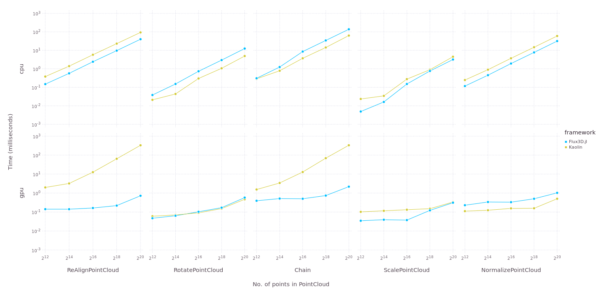
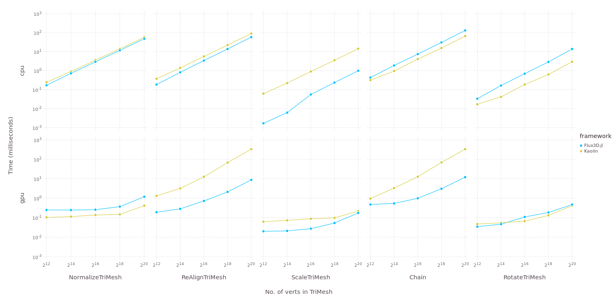
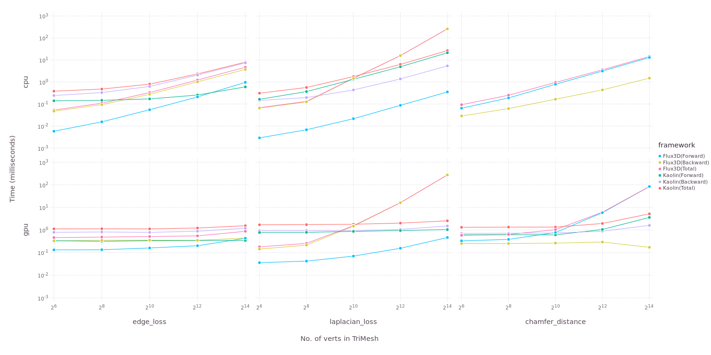

Flux3D.jl, 3D Vision Library in Julia
3D computer vision involves various computer vision techniques like classification, segmentation, object detection, super-resolution and many more. Modeling these problems becomes significantly easier when there is a general purpose differentiation library available, alongside the litany of tools needed to solve a train ML model, which FluxML already supports.
Performing 3D vision tasks involve preparing datasets to fit a certain representation and applying transforms to them. Further, Flux3D exports common 3D metrics for use in designing the loss objective and various 3D layers, which have been optimised for performance for large datasets, typical in vision-based tasks.
What is Flux3D.jl
Flux3D.jl is a 3D vision library, written completely in Julia. This package utilizes Flux.jl and Zygote.jl as its building blocks for training 3D vision models and for supporting differentiation. This package also has the support of CUDA GPU acceleration with CUDA.jl. Some of the roles of Flux3D are:
3D Structures - Accelerated Batched Data structure for PointCloud, VoxelGrid and TriMesh for storing and computation.
Transforms - Multiple transforms for PointCloud, VoxelGrid and TriMesh
Metrics - metrics like chamfer_distance, laplacian loss and edge loss for defining loss objectives.
Dataset - ModelNet10/40 (in multiple variants like pointcloud, mesh, voxel) and a Minimal Custom Dataset wrapper.
Conversions - Interconversion between different 3D structure (this also help in building different variants of the dataset)
Visualize - visualizing PointCloud, TriMesh and VoxelGrid
3D Deep Learning - Implementations of some commonly used 3D layers and models.
Flux3D.jl : github.com/FluxML/Flux3D.jl
Docs : fluxml.ai/Flux3D.jl/stable
Benchmarks for Flux3D.jl
Kaolin is a popular 3D vision library based on PyTorch. Flux3D.jl is overall faster than Kaolin in terms of applying transforms on PointCloud/TriMesh and comparable with Kaolin in terms of applying metrics. However, there must be work done to improve the back pass in laplacian loss which uses SparseArrays. From the benchmarks, we can tell that Flux3D can outperform Kaolin. Some key-differences between the two are discussed later in this post.
  
Short Walkthrough of the Flux3D.jl
A basic training pipeline requires preparing the datasets, defining the model, the loss function and finally training it. Let's go through each step along with visualising and evaluating the results.
Handling 3D DataPoint
Handling 3D DataPoint
Pointcloud, triangle mesh and voxels are three widely used representation for 3D data and most of the 3D vision work is also based on these structures. To apply transforms to our data, we need to initialise it.
julia> using Flux3D
julia> m = load_trimesh("airplane.off", "teapot.obj") |> gpu
TriMesh{Float32, UInt32, CUDA.CuArray} Structure:
Batch size: 2
Max verts: 17443
Max faces: 17116
offset: -1
Storage type: CuArray
julia> p = PointCloud(m)
PointCloud{Float32} Structure:
Batch size: 2
Points: 3000
Normals: 0
Storage type: CuArray{Float32,3}
julia> v = VoxelGrid(m)
VoxelGrid{Float32} Structure:
Batch size: 2
Voxels features: 64
Storage type: CuArray{Float32,4}
julia> t = NormalizeTriMesh(inplace=false)
NormalizeTriMesh(;inplace=false)
julia> m2 = t(m)
TriMesh{Float32, UInt32, CUDA.CuArray} Structure:
Batch size: 2
Max verts: 17443
Max faces: 17116
offset: -1
Storage type: CuArray
julia> save_trimesh("normalize_aiplane.obj",m2,1) Preparing Dataset
Preparing Dataset
ModelNet10/40 is one of the widely used 3D dataset, and we can easily access and preprocess this dataset for use in various vision-based tasks using Flux3D. We can also use conversion transforms for using ModelNet10/40 in multiple representations like PointCloud, TriMesh, VoxelGrid.
julia> using Flux3D, Makie
julia> dset = ModelNet10(categories=["monitor","chair"])
ModelNet Dataset:
root: /root/.julia/packages/Flux3D/9bMbc/datasets/
train: true
length: 1354
transform: nothing
categories: 2
julia> dset[1]
DataPoint:
idx: 1
data: TriMesh{Float32,UInt32,Array}
ground_truth: 1
category_name: monitorWe can use conversion transforms to convert the dataset to VoxelGrid. Similarily we can convert VoxelGrid, TriMesh and PointCloud to any 3D structure either using transforms or simply using the regular constructor.
julia> t = Chain(NormalizeTriMesh(), TriMeshToVoxelGrid(64))
Chain(NormalizeTriMesh(;inplace=true), TriMeshToVoxelGrid(resolution=64))
julia> dset2 = ModelNet10(train=false, transform=t)
dset2 = ModelNet Dataset:
root: /root/.julia/packages/Flux3D/9bMbc/datasets/
train: false
length: 908
transform: Chain(NormalizeTriMesh(;inplace=true), TriMeshToVoxelGrid(resolution=64))
categories: 10
julia> dset2[1]
DataPoint:
idx: 1
data: VoxelGrid{Float32}
ground_truth: 1
category_name: bathtub Defining Model/Loss
Defining Model/Loss
Loss objectives and designing model solely depend upon the requirement of tasks, and with the help of FLuxML ecosystem, we can define any custom model as well as loss. There are some commonly used metrics and predefined 3D models which can assist in 3D specific tasks like chamferdistance, laplacianloss and edge_loss.
julia> chamfer_distance(p,p)
1.58147f-5
julia> laplacian_loss(m)
6.72288
julia> edge_loss(m)
2110.6 Training
Training
Flux and Zygote takes care of everything here :)
Additonally, 3D structures and all relevant transforms, as well as metrics, are compatible with Zygote for supporting differentiation.
Visualization and Evaluation
Visualization and Evaluation
Flux3D provides a function visualize for visualizing 3D structures. This function uses Makie for plotting. We can use this same function for visualizing all three 3D structures PointCloud, TriMesh, and VoxelGrid
julia> using Makie
julia> vbox(
hbox(
visualize(m,1),visualize(p,1,markersize=25)
),
hbox(
visualize(v,1), visualize(v,1,algo=:MarchingCubes)
),
)Why use Julia and FluxML ecosystem
Kaolin is written majorly in the lower language C++ and uses CUDA-C for using GPU which is integrated with python for API interface. But with Flux3D, it is written purely in Julia and with the help of CUDA.jl we are also able to leverage GPU acceleration with the same code. This surely emphasizes the benefit of using Julia Language for intense computation like 3D vision while using high-level functions like any other modern language.
FluxML ecosystem uses Zygote as the AD engine which doesn't require the input and variable to be present in any special form (like Tensors in PyTorch), instead, we can simply define a function without doing mutation and Zygote will calculate gradients for us. Therefore we can make this package compatible with FluxML ecosystem without doing any extra work and even with many other packages like SciML differential equations ecosystem.
There are various Julia packages (thanks to awesome Julia community!) which make Flux3D.jl possible. With the help of Makie ecosystem, we can easily interact, visualize 3D structures, save the plots and gifs. NearestNeighbors.jl which is high performance nearest neighbour search library also makes it possible to perform intense computation metrics like chamfer distance even on CPU.
Conclusion
As all the batched structure for PointCloud, TriMesh, and VoxelGrid are stable enough, we can easily define any arbitrary or custom functions on top of it and using Zygote we can easily differentiate through it. There are a lot of interesting applications of Flux3D.jl along with other interesting packages in Julia like DiffEqFlux, worth exploring.
Some of the things which would be interesting to have in future releases are:-
Cache-based Custom dataset wrapper, as 3D data are expensive in terms of space and computation (especially in VoxelGrid).
Some more metrics for 3D data like normalconsistency, cloudtosurfacedistance and some more loss.
Add support for textures in case of TriMesh which will open a lot more applications.
Integration with Differentiable Graphics Frameworks (like RayTracer.jl)
Any suggestions, issues and pull requests are most appreciated. Cheers!